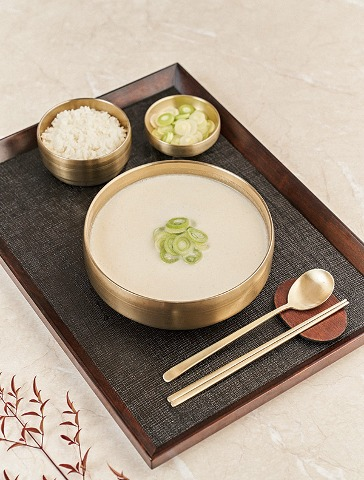
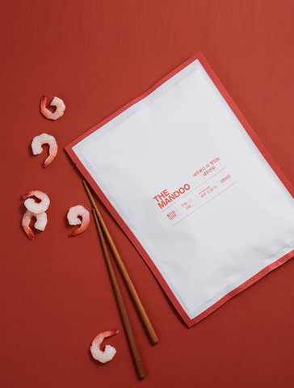
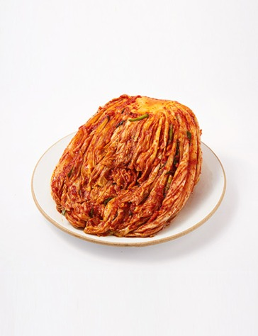
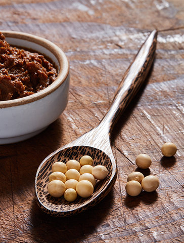
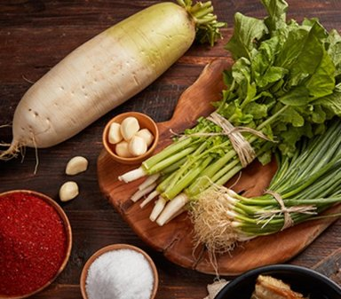
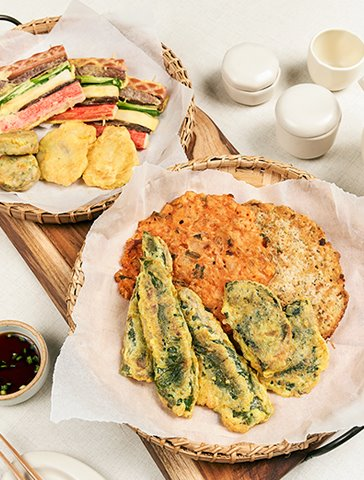
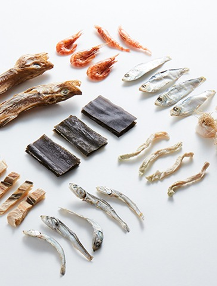

-

더 순수한 한우사골곰탕!
우리 땅에서 자란 한우, 무항생제 국내산 사골과 잡뼈로 깨끗하게 핏물 제거 후 오직 한우 사골과 정세수만 넣고 오랜시간 끓여 만든 홍진경의 한우사골곰탕! 어떠한 첨가물도 넣지 않은 한우사골곰탕이다.
-

더김치보다 더 인기있는 더만두!
홍진경대표의 모친은 어릴적 외할아버지가 만들어 주시던 만두맛을 잊지 못했고 커서 더만두를 만들었다. 얼리지 않은 국내산 생돈육과 생야채는 더만두의 자랑이다. 고기를 넣지 않고 식물성 재료로만 맛을 낸 비건만두도 있다.
-

더김치보다 더 인기있는 더만두!
홍진경대표의 모친은 어릴적 외할아버지가 만들어 주시던 만두맛을 잊지 못했고 커서 더만두를 만들었다. 얼리지 않은 국내산 생돈육과 생야채는 더만두의 자랑이다. 고기를 넣지 않고 식물성 재료로만 맛을 낸 비건만두도 있다.
-

시골의 구수한 된장찌개가 그리울 때..
더장은 경기도 연천의 Non-GMO콩을 사용한다. 전통의 방법으로 첨가물 없이, 자연숙성 및 자연발효를 하여 장을 만든다. 보리를 넣어 감칠맛과 구수함을 더했다.
-

싱싱원재료
주식회사 홍진경에서 판매되는 상품의 원재료/원산지 증명서를 확인하실 수 있습니다.
-

홍진경 더전!
명절 음식 준비 스트레스 한방에 해결! 그냥 먹어도 맛있고 차례상에 올려도 손색 없다. 후라이팬에 기름만 살짝 두르고 데우면 종가집 맏며느리 안부럽다.
-

어떤 국물도 이제 쉽게 만들자!
여름철 김치말이 국수부터 겨울철 각종 찌개요리까지 거의 모든 국물요리에 적합하다. 더김치의 핵심재료인 노가리육수의 노가리, 한약재료로 쓰이는 파뿌리나 국물용 멸치가 아닌 고급용 중간 멸치 등을 사용했다. 이 밖에 고급 홍새우 등 총 8가지 재료를 넣었다.